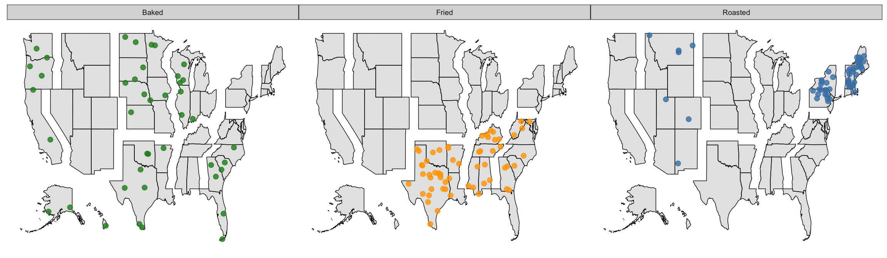

Basic Usage
This R package is helping with working with maps by making insets, pull-outs or zooms:
This map is saved as object division in the package.
Map of all US states and state equivalents as defined by the 2016 Tiger shapefiles provided by the US Census Bureau:
data(states)
states %>%
ggplot(aes(x = long, y = lat)) + geom_path(aes(group = group)) +
ggthemes::theme_map()The functions scale and shift allow us to scale and shift parts of the map:
states %>%
shift(NAME == "Hawaii", shift_by = c(52.5, 5.5)) %>%
scale(NAME == "Alaska", scale=0.3, set_to=c(-117, 27)) %>%
filter(lat > 20) %>%
ggplot(aes(long, lat)) + geom_path(aes(group=group)) +
ggthemes::theme_map() This map is available as data object inset.
Looking for counties as well? The objects counties and counties_inset are available in the data objects.
counties_inset %>% ggplot(aes(x = long, y = lat)) +
geom_path(aes(group = group), size=0.25) +
geom_path(aes(group = group), data = inset) +
ggthemes::theme_map() Sampling from a uniform distribution
Below are maps of the US overlaid by about 3200 points each. The points are placed uniformly within the geographic region. The number of points in each region is based on different strategies, but in all three maps each dot represents approximately 100k people. From left to right we have: (left) a sample of locations selected uniformly across the US, (middle) each state contains a set of 63 uniformly selected locations, (right) the number of points within each state is proportional to the state’s population.
The function underlying the map based random sampling is map_unif. This function takes a map (or a subset of a map) and a number n and produces a dataset of n uniformly distributed random geo-locations within the area specified by the map. An alternative is implemented as ggplot2 (Wickham 2016) statistic stat_polygon_jitter.
Thanksgiving traditions
In 2015 FiveThirtyEight commissioned a survey asking people across the US a number of Thanksgiving related questions, such as side dishes, flavor of the pie, desserts and after dinner activities. They reported on the main difference in an article published on Nov 20 2015.
The dataset with responses of more than 1000 participants is available from FiveThirtEight’s data git hub repository.
The main finding was shown in a choropleth chart highlighting the disproportionally most common side dish in each region.
The FiveThirtyEight chart is fun, but it doesn’t show the whole picture. What else can we find out from the data about Thanksgiving traditions?
Looking at how participants said to prepare their turkeys we see that the country is mostly divided between Roasting and Baking the turkey, but some proportion of participants said that their turkey was being fried (orange). When we look closer, we see that there is a geographical component to where turkeys are getting fried.
For the side dishes, FiveThirtyEight styled a chart showing the disproportionally most common side dish. We have adapted the underlying model to deal with the disproportionally most common way of preparing the main dish. This gives a nice and simple map like this:
We see that in the South and South East turkey’s are being fried disproportionally most often, whereas everywhere else it is a toss-up between roasting and baking the bird. But is that the whole picture … and what does disproprotionally most common actually mean?
Let’s go back to the raw data and put those on the map:
We get a similar picture, if not quite as simple as the previous map - but data is rarely that simple! We still see the toss-up between baking and roasting. And it looks like the bakers of turkey are in the lead in the North East and the Mountain division. What we also see is the geographical connection of the fried turkeys: the South and South East sees more of them, but there are some friers all along the East Coast, that we didn’t see before.
Going back to the (loglinear) model of the ways turkeys are cooked by division, we can visualize the residuals using randomly picked locations in each of the divisions.

What we see now, is the geographical pattern from before: fried turkeys are (disproportionally) most common in the South East, and we see the split between baked and roasted turkey across the country - with roasted turkey in particular most popular in New England. What we find additionally, though, is that besides fried turkey in the South East, we also see a liking of baked turkey that was not apparent before.
Some discussion

Excerpt from plate #59 of the Statistical Atlas of 1883 showing density maps of the number of schools in counties of Indiana in 1853 (left) and 1880 (right)
Density maps are not new - some of the first examples (see Figure ) appear in the Statistical Atlas accompanying the tenth US census of 1880 (Hewes and Gannett 1883) to show the number and, in particular, the increase in number of schools in counties in Indiana (see Figure ). The functions dotsInPolys of the maptools package (Bivand and Lewin-Koh 2017) and point.in.polygon of the sp package (Pebesma and Bivand 2005, @sp2). Waller and Gotway (2004) (p.82) warn from using density maps for public health statistics. However, the only point the authors raise is that readers might be misled into believing that the (random) locations are geographically accurate occurrences of events.
XXX Interesting discussion at http://axismaps.github.io/thematic-cartography/articles/dot_density.html
XXX Just for fun https://xkcd.com/1845/
Getting it to work
if (!require(devtools)) {
install.packages("devtools")
}
devtools::install_github("heike/ggmapr")References
Bivand, Roger, and Nicholas Lewin-Koh. 2017. maptools: Tools for Reading and Handling Spatial Objects. https://CRAN.R-project.org/package=maptools.
Bivand, Roger S., Edzer Pebesma, and Virgilio Gomez-Rubio. 2013. Applied spatial data analysis with R. 2nd ed. New York, NY: Springer. http://www.asdar-book.org/.
Hewes, Fletcher Willis, and Henry Gannett. 1883. “Scribner’s Statistical Atlas of the United States, Showing by Graphic Methods Their Present Condition and Their Political, Social and Industrial Development.” New York: digitized version provided through Library of Congress, https://www.loc.gov/item/a40001834/; Charles Scribner’s Sons.
Pebesma, Edzer, and Roger S. Bivand. 2005. “Classes and methods for spatial data in R.” R News 5 (2). https://cran.r-project.org/doc/Rnews/.
Waller, Lance A., and Carol A. Gotway. 2004. Applied Spatial Statistics for Public Health Data. Wiley Series in Probability and Statistics. Hoboken, US: Wiley-Interscience.
Wickham, Hadley. 2016. Ggplot2: Elegant Graphics for Data Analysis. 2nd ed. Springer-Verlag New York. http://ggplot2.org.